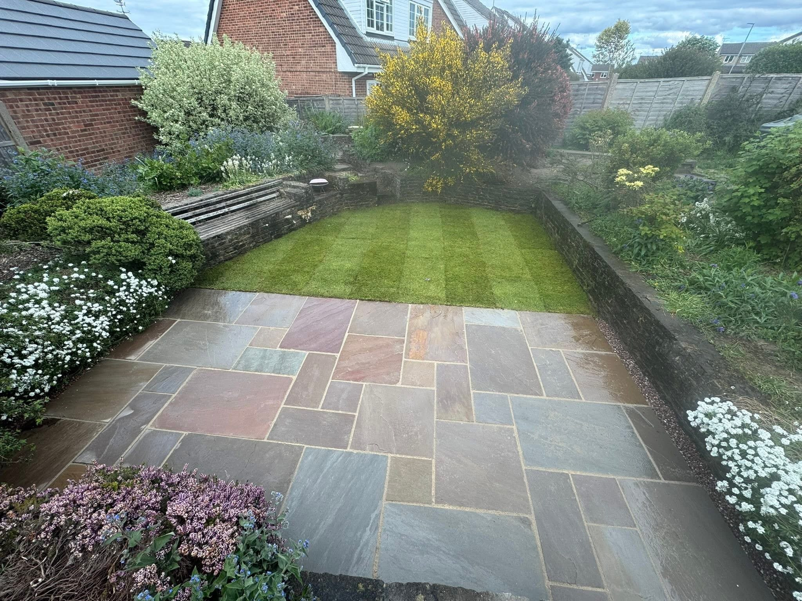
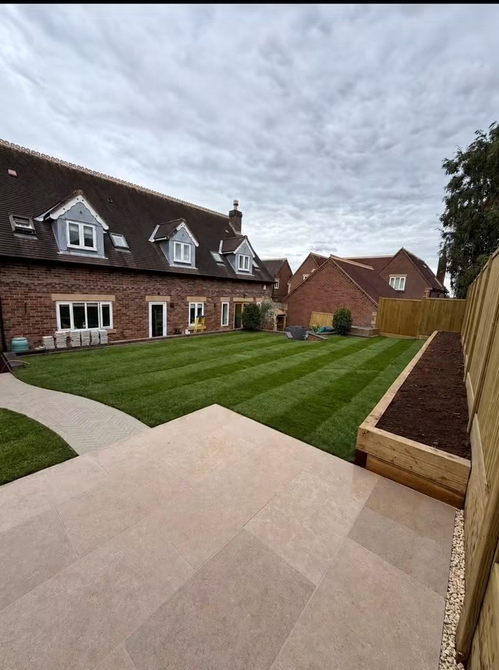
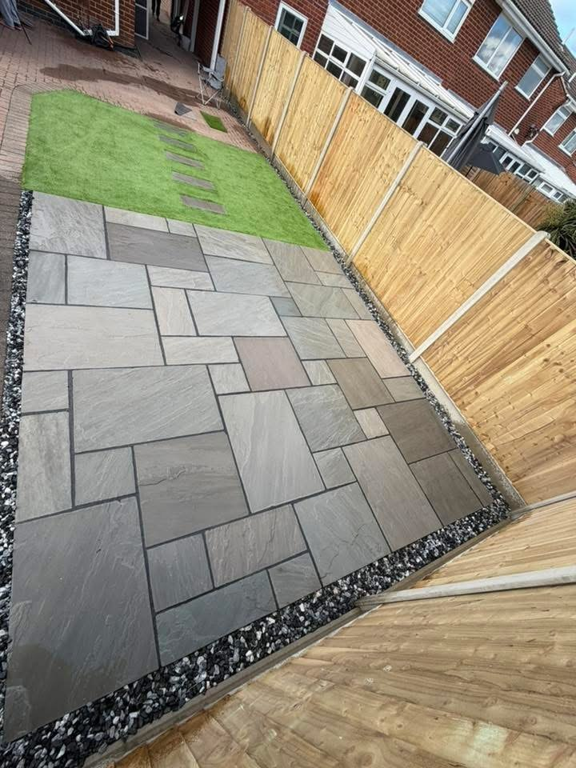
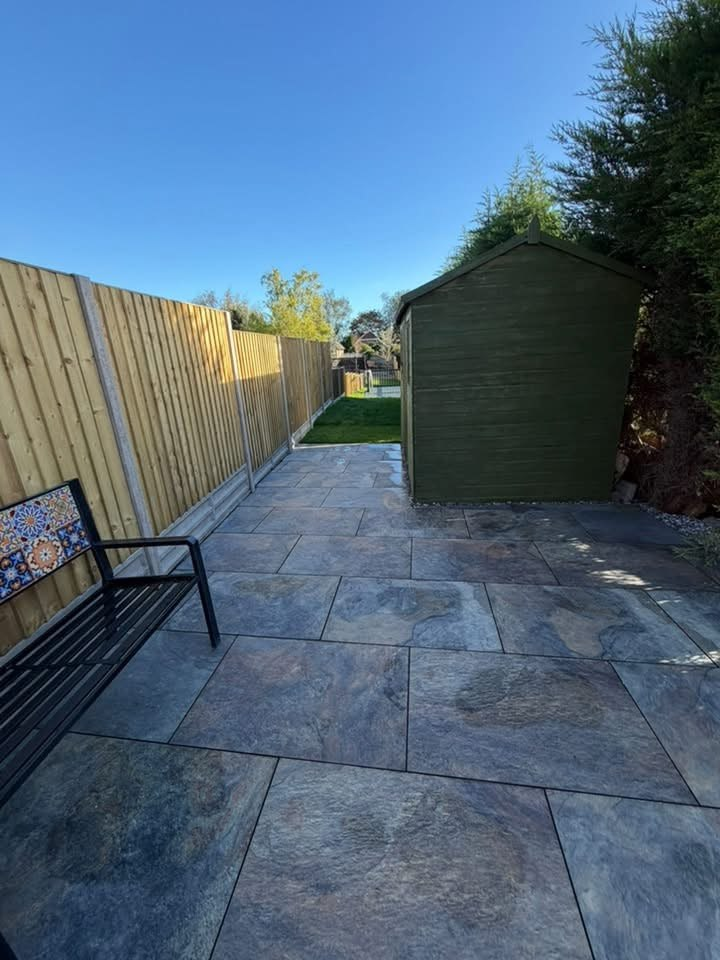
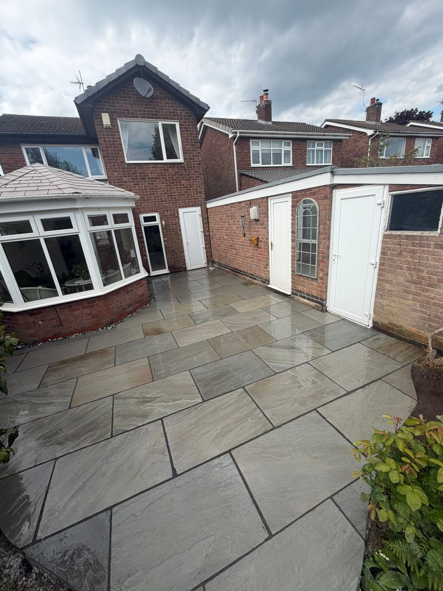
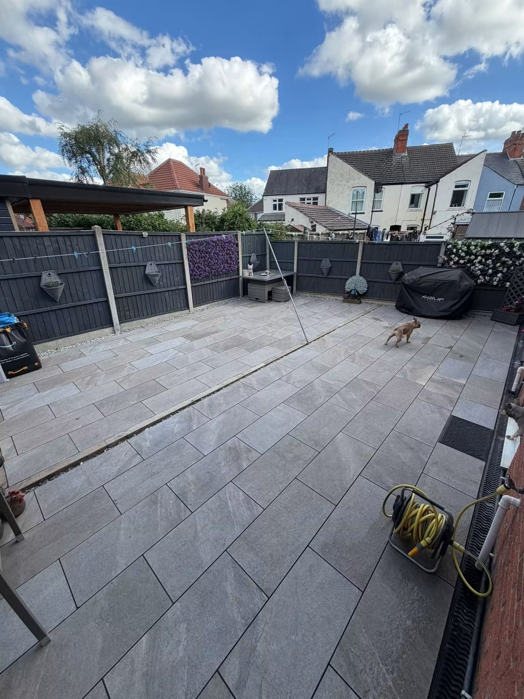
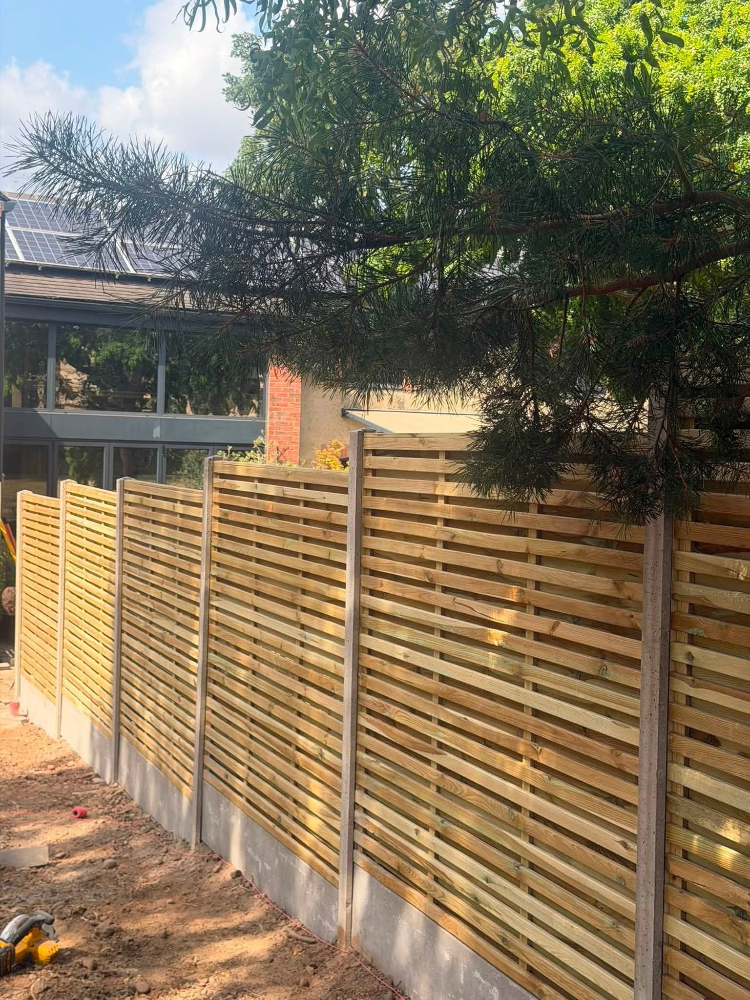
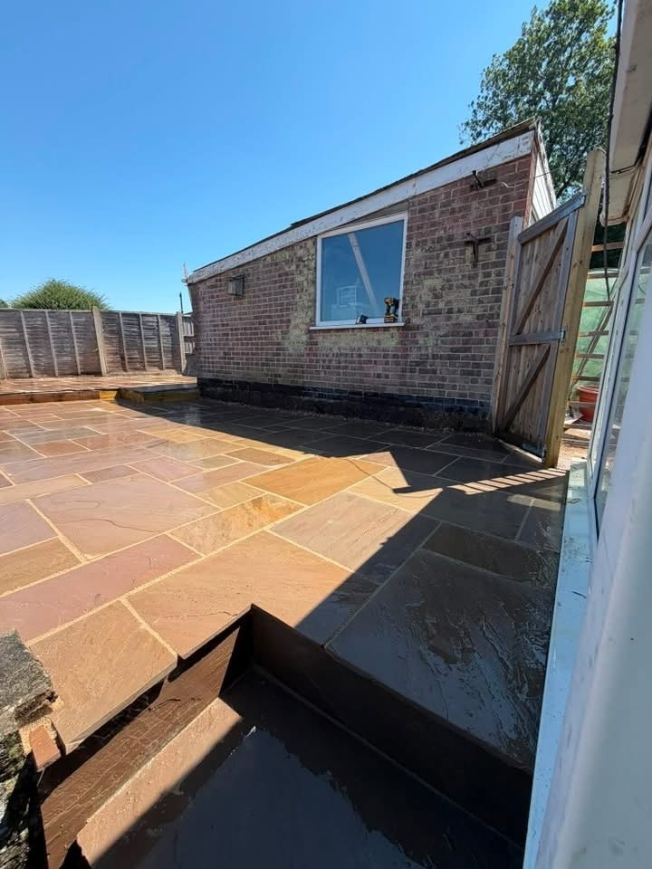
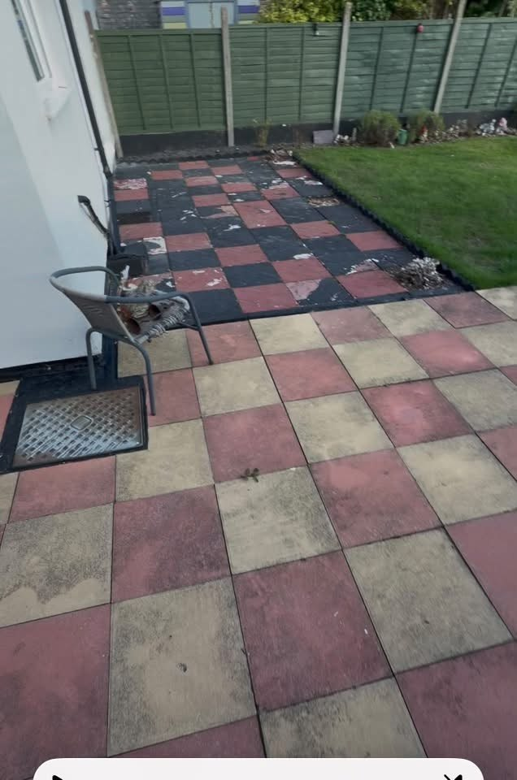
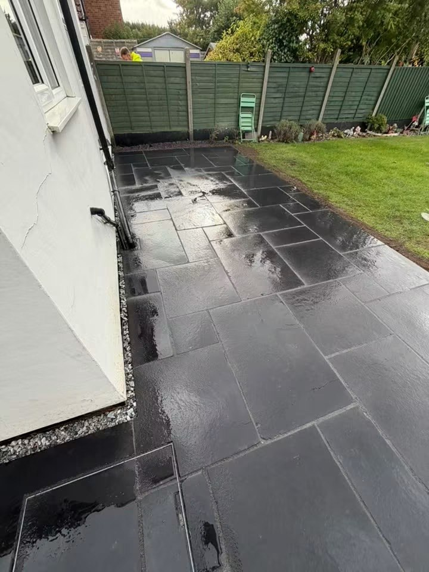

The Midlands · Landscaping & Patios in the Midlands
Building it right, from the ground up.
Patios, landscaping, garden fencing and outdoor construction in and around the Midlands. Explore recent work and talk to TS about your property.
Landscaping & Patios in the Midlands
Your garden. Connected by design.
TS Construction & Landscaping is based in and around the Midlands. The project portfolio combines patios and paved outdoor spaces with lawns, curved paths, timber fencing and garden level changes. Browse completed projects and get in touch with your postcode and plans.
Building it right, from the ground up
A garden project starts with how you want the space to work. Tell TS which areas you want to change, the features you want to keep and the access you need between the house and garden. Photos help explain the existing layout.
See the connections between each part
Recent projects show paving next to lawns and planted borders, defined patio edges and timber boundaries. Use the service pages to explore relevant examples and describe the complete scope you have in mind.
Request a quote →

Patios & paving & Garden landscaping
From the paving to the garden edge.
Explore natural stone colours, dark paving and the details that connect outdoor spaces with the house and garden.
Discuss your project →

RECENT WORK
See the finished work.
A closer look at projects and work in progress.



BEFORE & AFTER
The same space. A new patio.
The patio beside the same white house, before replacement and after the dark paving was completed.
Discuss your patio →

The Midlands
Construction and landscaping in the Midlands.
TS Construction & Landscaping is based in and around the Midlands. Share your location, ideas and photos to discuss the work you have in mind.
Patios, garden layouts, timber fencing and outdoor construction.
Completed projects and a matched patio before-and-after.
Call, email or prepare a WhatsApp enquiry with your details.
GOOD TO KNOW
Your questions answered.
Where do you work?
The business describes working in and around the Midlands. Send your postcode so the location can be checked.
What outdoor projects can I discuss?
The portfolio includes patios and paving, lawns and garden layouts, timber fencing, paths and outdoor level changes.
How do I get in touch?
Call 07787 121157 or use the WhatsApp form with your name, service, postcode and project details.
REQUEST A QUOTE
Tell us what you have in mind.
Send the details of your project and its location. WhatsApp opens with your enquiry ready to send, where you can also attach photos.
TS Construction & Landscaping
Ready to discuss your project?
The Midlands